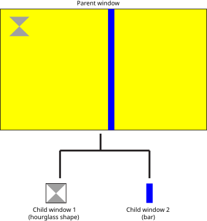

Screen defines some fundamental window types. In combination with the placement in its hierarchy and its window properties, the type of the window influences how the window is sized and positioned.
The window type is specified at the time you create the window by calling screen_create_window_type(). You can also call screen_create_window() to create an application window. That's just the equivalent of calling screen_create_window_type() with SCREEN_APPLICATION_WINDOW as the type.
The window type that's used to display the main application.
Application windows can parent windows of type SCREEN_CHILD_WINDOW and SCREEN_EMBEDDED_WINDOW. They can even parent other SCREEN_APPLICATION_WINDOW types.
Application windows can be made to join groups. For example, an application window can be made to be part of a group that's owned by the window manager. In this case, the window manager calls screen_join_window_group() on behalf of the application window. The application window did not explicitly make the request itself to be part of a group.
An application window is positioned relative to its parent. If it doesn't have a parent, its size and position are always given in display coordinates (i.e., relative to the dimensions of your display).
Application windows, unlike child or embedded windows, can be visible even when they have no parent.
The window type that's below a parent window in a window hierarchy; a common use for a child window is to display a dialog box.
Child windows can't be made to join groups; a child window controls which group it joins. A child window itself must call screen_join_window_group() to be parented. A child window must join an application window's group; otherwise, the child window remains invisible.

The window type that's below an application or a child window in a hierarchy. An embedded window behaves like a child window, except that it's clipped to the parent window's destination rectangle.
Similar to a child window, an embedded window must call screen_join_window_group() to join either an application's or a child's window group; otherwise, the embedded window remains invisible.
Windows of type SCREEN_CHILD_WINDOW have the property SCREEN_PROPERTY_FLOATING defaulted to indicate that the window is floating, whereas embedded windows have this property defaulted to indicate that the window is non-floating.
The embedded window type provides the illusion that the contents of both the parent and embedded window represent a single logical view. When you scroll a viewport, the view of the content in the parent window and the position of the embedded window are updated synchronously.
When you zoom in on the parent window, the embedded window will change size and be repositioned independently, without the need for the parent to update the embedded window. Thus, the position and size of embedded windows are relative to the source rectangle (defined by the SCREEN_PROPERTY_SOURCE_POSITION and SCREEN_PROPERTY_SOURCE_SIZE properties) and the viewport defined by the SCREEN_PROPERTY_VIEWPORT_POSITION and SCREEN_PROPERTY_VIEWPORT_SIZE properties of its parent window.
When you pan the source rectangle of the parent window within a larger buffer, the position of any embedded window is updated automatically. Alternatively, an application can move the viewport (changing the SCREEN_PROPERTY_VIEWPORT_POSITION and SCREEN_PROPERTY_VIEWPORT_SIZE properties) instead of the source rectangle and achieve the same effect without requiring a window buffer that's larger than the source size.
Window managers or parent windows can therefore be abstracted from the underlying window hierarchy. The window manager or parent window can move, fade, or scale a window, and the results will be the same whether the window is a single window or part of a more complex hierarchy of several windows.
screen_create_window_type(&screen_window, \
screen_context, \
(SCREEN_APPLICATION_WINDOW | SCREEN_ROOT_WINDOW) );